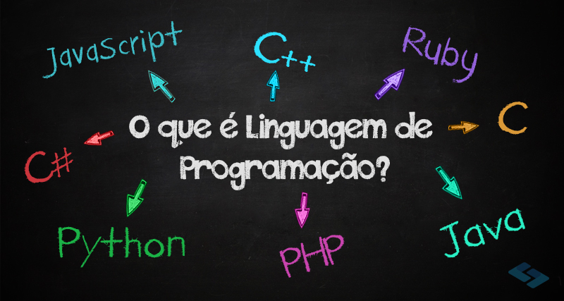

JavaScript é uma linguagem de programação interpretada e baseada em objetos com funções de primeira classe, com o auxilio de html e css (que são linguagens de marcações de texto), eles são muitos utilizados para criações de sites web.

HTML (Linguagem de Marcação de HiperTexto) é o bloco de construção mais básico da web. Define o significado e a estrutura do conteúdo da web. Outras tecnologias além do HTML geralmente são usadas para descrever a aparência/apresentação (CSS) ou a funcionalidade/comportamento (JavaScript) de uma página da web.

CSS (Cascading Style Sheets ou Folhas de Estilo em Cascata) é uma linguagem de estilo (en-US) usada para descrever a apresentação de um documento escrito em HTML ou em XML (incluindo várias linguagens em XML como SVG, MathML ou XHTML). O CSS descreve como elementos são mostrados na tela, no papel, na fala ou em outras mídias.
Não há um conceito formal, mas pode-se dizer que linguagem de programação é o meio utilizado para desenvolvedor e máquina se comunicarem. A linguagem funciona por meio de instruções, palavras-chave, regras semânticas e sintáticas e ainda símbolos ordenados.
Caso queira aprender mais detalhadamente, volte ao inicio da página.